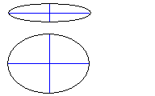
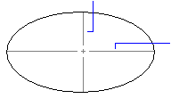

|
AddEllipse Method |
Creates an ellipse in the XY plane of the WCS given the center point, a point on the major axis, and the radius ratio.
Signature
RetVal = object.AddEllipse(Center, MajorAxis, RadiusRatio)
Object
ModelSpace Collection, PaperSpace Collection, Block
The objects this method applies to.
Center
Variant (three-element array of doubles); input-only
The 3D WCS coordinates specifying the center of the ellipse.
MajorAxis
Variant (double); input-only
A positive value defining the length of the major axis of the ellipse.
RadiusRatio
Double; input-only
A positive value defining the major to minor axis ratio of an ellipse.
A radius ratio of 1.0 defines a circle.
Radius ratio = 0.25 |
 |
RetVal
Ellipse object
The newly created Ellipse object.
Remarks
The ellipse may be closed, or open (elliptical arc), and is created on the XY plane of the current WCS.
This object represents a true ellipse, not a polyline approximation.
Minor axis |
|
 |
|
| Comments? |